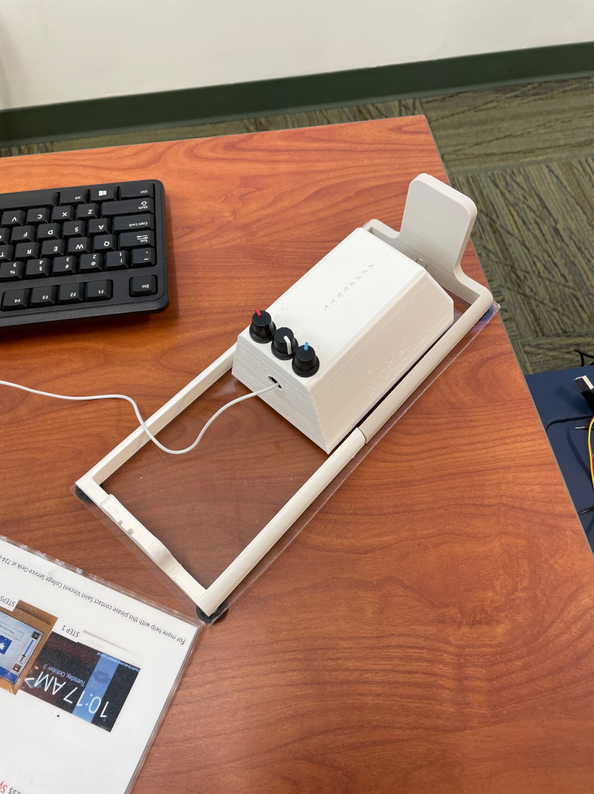

Soft Materials Tester 2020-2021:
Designed and built a fully operational soft materials tensile tester for the Saint Vincent College Engineering Lab as a part of my senior capstone project.

Decision Making Through Risk Minimization Algorithm 2020-2021:
Under the guidence of Dr. Robinson at Saint Vincent college,
our team worked on creating an algotrithem that could calculate risks adjust systems accordingly.
An algorthum like this would be very useful in technology like self driving cars.